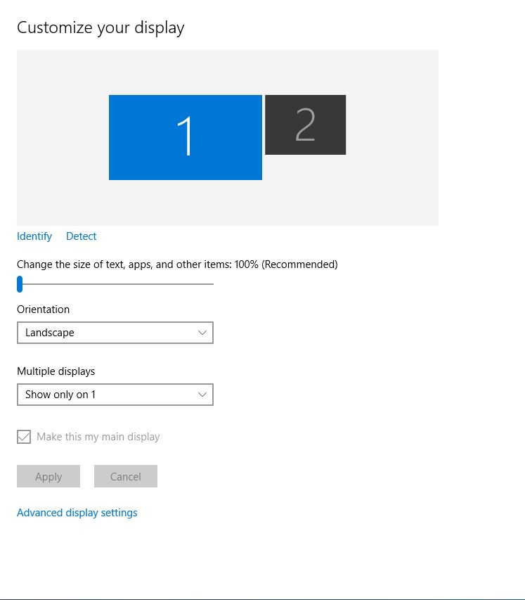

These instructions will show you how to use the projector.
Ingredients/Tools Required:
- 1 Laptop
- 1 HDMI Cable
- 1 Projector
- 1 Laser Pointer
- 1 Guest Virginia Tech ID
- 1 Turntable
- 1 Turntable USB Cord (comes attached to Turntable)
- Blankets (as needed)
-
Swipe your guest ID in the card swiper to access the projector
-
Turn on your personal computer and find the file you wish to project
Put blankets over the animal's cages so they are
not freightened by the projector lights as they are especially bright
-
Turn on the projector by hitting the power button on the right side of the
projector
-
Wait for the projector to power up fully
-
Attach the HDMI cable to your laptop's HDMI port
-
Attach the other end of the HDMI cable to the projector's HDMI port located
near the power button
Projector's HDMI port looks the same as the laptop's
-
Plug the turntable's USB into your computer
-
Look at the screen to see that your turntable's interface is connected with the
laptop
This means your turntable's interface will show up on the projector after the
rest of the steps are completed
-
Right click on your laptop's desktop and select "display settings"
-
Select the number "2" screen on the screen that pops up

-
Grab your laser pointer as the projector will now be showing your laptop
screen
-
Point with the pointer to relevant material on the screen as you give your
presentation
Do not point laser pointer into people's eyes